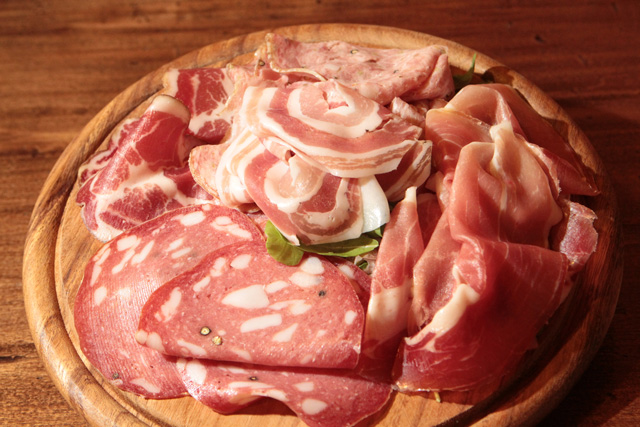
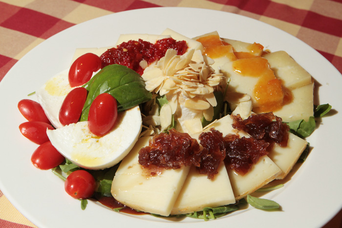
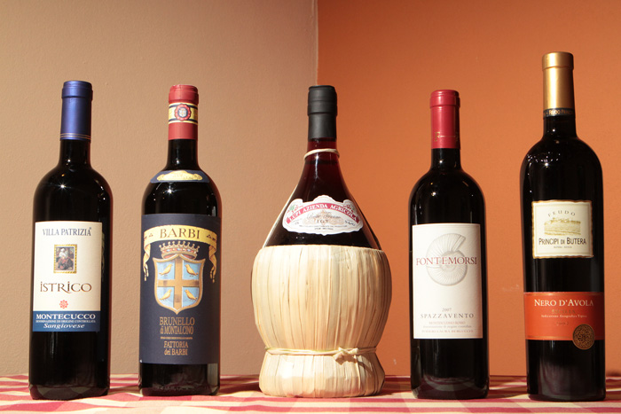
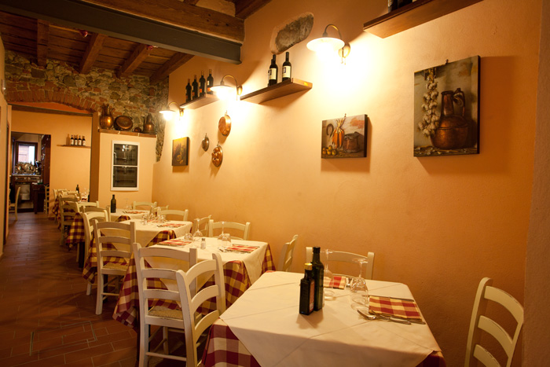
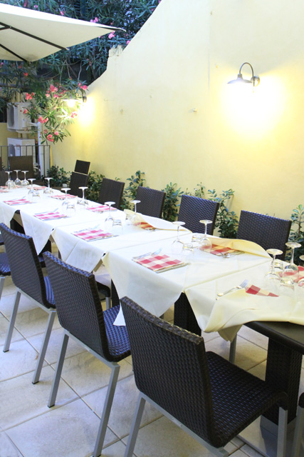
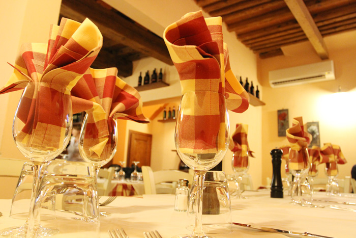

la trattoria
La Trattoria Tiberio, nel centro di Firenze, offre un ambiente rustico, familiare e rilassante in perfetto stile fiorentino, dove i sapori sono quelli della vera cucina toscana, il servizio è preciso e al tempo stesso amichevole, in cui gli ospiti sono accolti dalla cordialità e professionalità dello chef e titolare Maurizio.
Cucina Toscana
- Tagliere Pecorino di Fossa
- Ravioli maremmani
- Maccheroni all'anatra
- Bistecca alla fiorentina
- Baccalà su crema di ceci
Per prenotazioni
Tel 055 3841266
Sapori unici
Il ricco menu offre pietanze per tutti i gusti, dai sapori unici che ricordano la bontà degli ingredienti tipici delle colline fiorentine sapientemente curati da una lavorazione artigianale.
Il punto di forza della Trattoria è la ricerca di ricette semplici, tipiche della tradizione culinaria toscana, tramandate di padre in figlio dalla famiglia Tiberio, e l'uso di ingredienti genuini per una cucina sempre rispettosa della freschezza e della stagionalità dei prodotti, il tutto accompagnato da una selezione di vini rossi e bianchi.



Il pranzo e la cena da Tiberio
Possibilità, all'ora di pranzo, di sedersi e consumare un unico piatto gustoso per spezzare la frenesia della giornata di lavoro a prezzi contenuti. Più particolare, raffinata e trendy la sera, con proposte gastronomiche sempre nuove, specialmente nelle serate a tema organizzate dal nostro chef.
Aperto a pranzo e a cena, nel periodo estivo vi è la possibilità di gustare piacevoli pasti all'aperto nel grazioso giardino.


